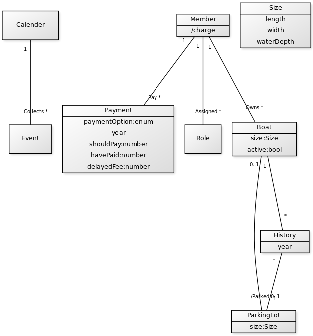

Workshop1 - Domänmodellering.
Domänmodellering enligt problembeskrivning för betyg 4.
Complementing text to domain model grade 4 this text is a complementing text to the one about grade 3 above.
In this model we decided to add the attribute - active for our Boat object. It describes if the boat is currently owned by the member. This will be communicated to our employer.
Object History is yearly data containing Boats and Parkinglot objects). It is there for our system to show the Parkinglot history. System will need that when handle bookings based on current and historical data. The association /parked is derived from the History object.
The new attributes in the Payment-object are added to the diagram for the sake of payment history.